Unofficial study solution; not an official GTU answer key. Answers have not been independently verified. English text reflows; source equations, diagrams and Gujarati retain their original appearance. Use Enlarge image to inspect them.
આ બિનસત્તાવાર અભ્યાસ ઉકેલ છે, સત્તાવાર GTU જવાબવહી નથી. PDF માંથી ગુજરાતી લખાણ સાચું નીકળતું નથી, તેથી દરેક જવાબ મૂળ ચિત્રરૂપે જાળવ્યો છે. વાંચવા માટે ચિત્ર મોટું કરો. મૂળ પ્રશ્ન અને પરીક્ષાના વિકલ્પોની સૂચનાઓ અનુસરો.
Coverage: all five questions and every printed OR alternative are answered: 28 parts. The authentic English question is retained in both language views; answers are in English and Gujarati. Diagrams are schematic and not to scale.
Printed instructions: attempt all questions; make suitable assumptions; figures on the right indicate full marks; simple and non-programmable scientific calculators are permitted; the English version is authentic.
Calculation: the nicotine answer states its assumptions about concentration basis, stage count and solvent purity. These solutions are study material, not an official GTU answer key.
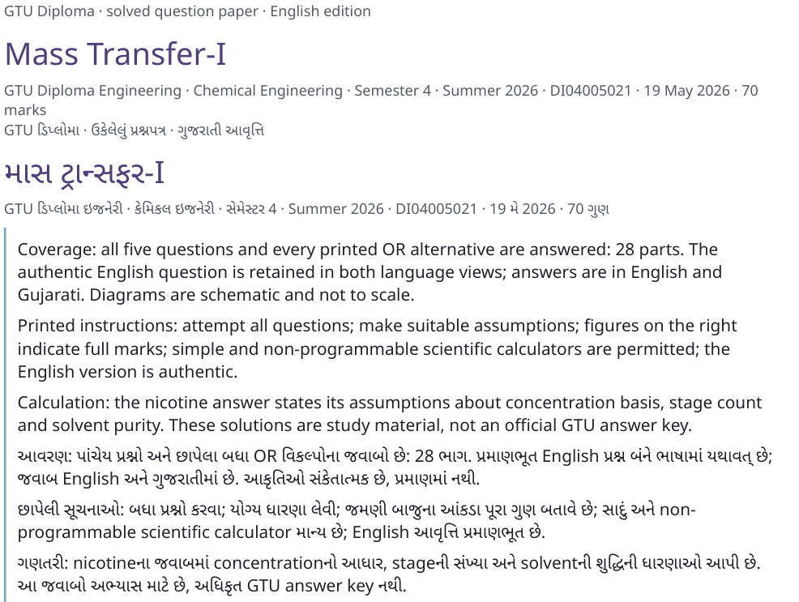
Question 1
Q1 · Mass-transfer fundamentals and operations
Q.1 (a) · Classify mass transfer operations based on phases. · 3 marks
Classify a mass-transfer operation by the phases in contact; the named operation also depends on the separation mechanism.
![Q.1 (a): preserved source formula, table or diagram, page 2. Extracted text context (formula notation may be incomplete): Phases Operation and example Gas–liquid Absorption of ammonia from air into water; vapour–liquid distillation also uses phase contact. Liquid–liquid Extraction of a solute from water into a second, only partly miscible liquid. Solid–liquid Leaching oil from seeds with solvent; crystallization forms a solid from a solution. Gas–solid / fluid–solid Drying transfers moisture from wet solid to gas; adsorption holds a component on a solid surface from gas or liquid.](summer-2026.assets/0001.webp)
In adsorption the solute accumulates on a solid surface; in absorption it enters the liquid bulk.
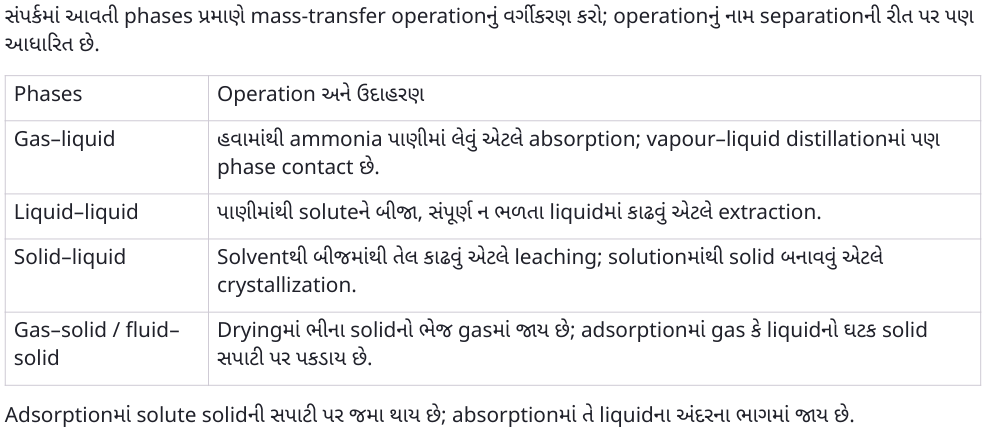
Q.1 (b) · Define molecular diffusion and distinguish it from eddy diffusion. · 4 marks
Molecular diffusion is the net movement of molecules relative to the mixture due to random molecular motion, ordinarily down a concentration gradient.
![Q.1 (b): preserved source formula, table or diagram, page 3. Extracted text context (formula notation may be incomplete): Point Molecular diffusion Eddy diffusion Cause Random motion of individual molecules. Turbulent velocity fluctuations carry groups of fluid across the mean gradient. Where Occurs even in a still fluid; also present in turbulent flow. Requires turbulent mixing; vanishes as turbulence disappears. Parameter DAB is a molecular property of the pair at specified conditions. Eddy diffusivity depends on flow, geometry and position; it is not a fixed material property. Scale Dominant in thin, nearly stagnant films. Often much faster in the turbulent bulk.](summer-2026.assets/0003.webp)
Both mechanisms may act together; eddies do not replace molecular transfer at the immediate interface.
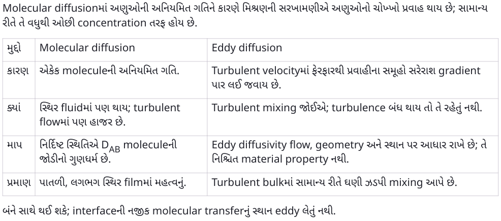
Q.1 (c) · Discuss various methods of conducting mass transfer operations in detail. · 7 marks
The following are different ways of conducting mass-transfer operations. They are overlapping classifications, not competing labels.
1. Separating-agent basis: a direct operation creates the second phase from the original material by adding or removing heat, as in distillation or crystallization. An indirect operation adds another material, such as solvent in extraction or absorbent in absorption. This textbook use of “direct” is not the same as physical direct contact.
2. Batch, continuous or semi-batch: charge and discharge a batch vessel between runs; continuously feed and withdraw in a continuous plant; a semi-batch unit has some continuous flow during a batch. For example, batch extraction changes composition with time.
3. Stagewise contact: a mixer–settler or tray gives identifiable contacting and separation stages. An ideal stage has leaving phases in equilibrium; an actual stage may not.
4. Continuous contact: in a packed absorber phases exchange material progressively along its height, without discrete equilibrium stages. A tray column may also have continuous throughput: flow mode and contact mode are different.
5. Flow arrangement: co-current phases move in the same direction; counter-current phases move in opposite directions; cross-current contact uses fresh second phase at successive stages.
6. Purpose and time: recovery removes a selected solute, whereas fractionation gives fractions of different composition. Either can be steady or unsteady depending on accumulation.

Schematic flow directions; each cross-current stage receives fresh second phase.
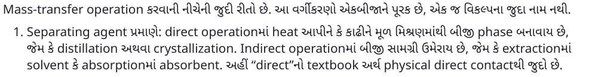
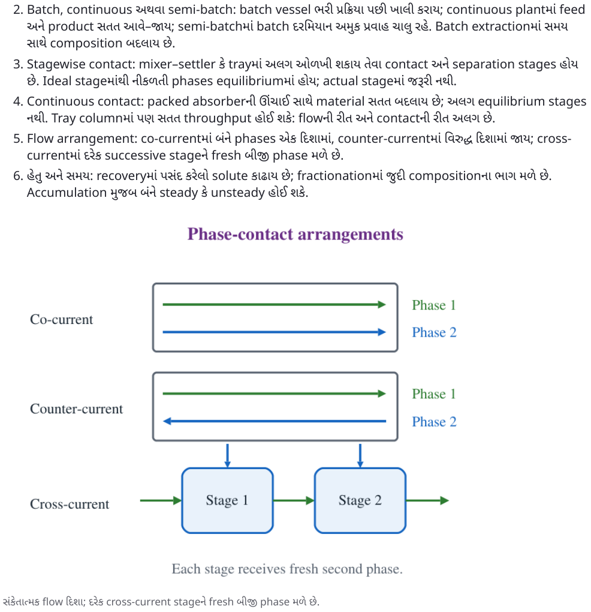
Q.1 (c) · Explain different types of operations (steady, unsteady, stage-wise, continuous) with applications. · OR · 7 marks
The question names two independent classifications: time/throughput and contact pattern.
1. Steady: at a fixed position all process variables are constant with time; no accumulation occurs in the chosen control volume. Composition can still change along the equipment. Example: a packed absorber after settling into normal operation.
2. Unsteady: inventory or conditions at a position change with time. Example: a batch extractor becoming depleted, or a continuous absorber during start-up.
3. Stagewise: phases contact and separate in identifiable steps. Each ideal stage gives equilibrium outlets; actual tray efficiency is generally below ideal. Example: mixer–settlers or a tray absorber.
4. Continuous throughput: feed and product flow during operation, for example a continuously fed tray column. It is not necessarily steady during start-up.
5. Continuous contact: if “continuous” means contact rather than throughput, a packed tower provides differential exchange along the bed, unlike discrete trays.
A continuous-flow tray column can be both steady and stagewise; a well-mixed batch can be unsteady. State which meaning of continuous is intended.
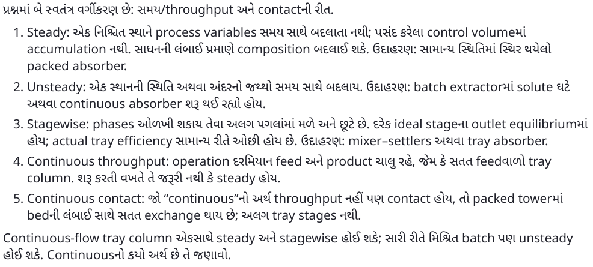
Question 2
Q2 · Diffusion, phase equilibrium and cascades
Q.2 (a) · State Fick’s first law of diffusion. · 3 marks
Fick’s first law: the molecular diffusive molar flux is proportional to the negative concentration gradient.
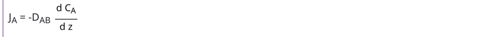

For a binary mixture at constant total molar concentration c, CA = c yA. JA is measured relative to the molar-average velocity; DAB is in m² s⁻¹, C in mol m⁻³ and J in mol m⁻² s⁻¹.
The minus sign gives diffusion down the gradient. In a fixed frame NA = JA + yA(NA + NB), so bulk flow must also be included. The local law is not restricted to steady state.
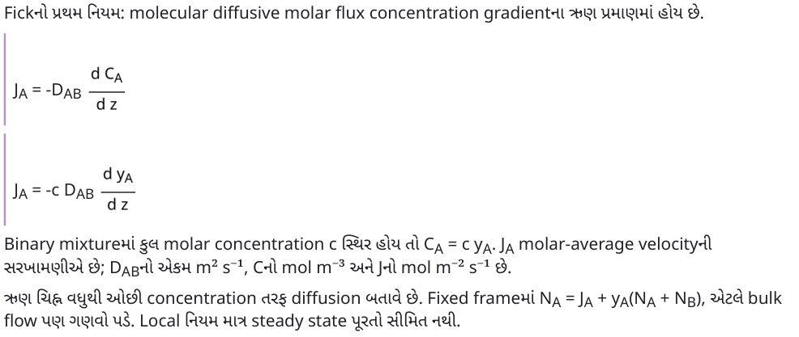
Q.2 (b) · Define phase equilibrium in mass transfer. · 4 marks
Phase equilibrium exists when phases at the same temperature and pressure have no net transfer of each component between them. Molecular exchange still occurs in both directions.
μA,α = μA,β
At equilibrium the chemical potential of A is equal in phases α and β; its concentrations or mole fractions need not be equal. An equilibrium relation, such as y* = m x when it is linear, pairs a gas composition y* with liquid composition x.
For absorption, if the actual gas mole fraction y is above y* for the bulk liquid, transfer tends from gas to liquid; at equilibrium the overall driving force is zero. Example: ammonia distributes between air and water.
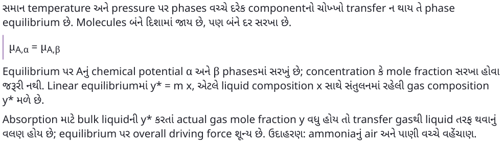
Q.2 (c) · Derive the equation for steady state diffusion of A through non-diffusing B. · 7 marks
Find the steady flux of A through non-diffusing B across a plane gas layer of thickness L.
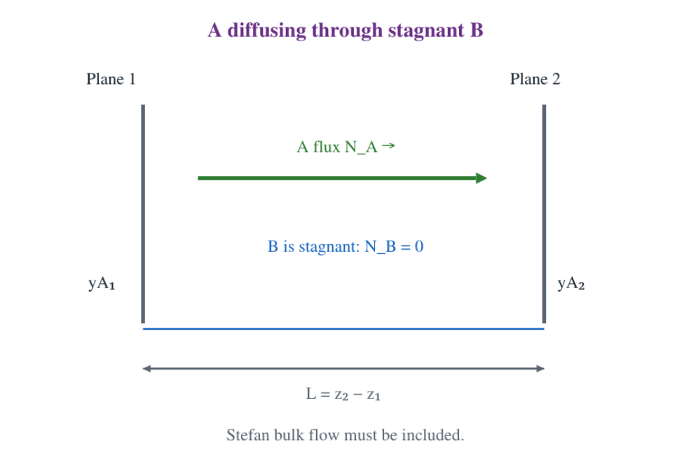
Fixed coordinate z points from plane 1 to plane 2; A moves right and the net flux of B is zero.
Assumptions and notation
• Binary ideal gas, one-dimensional steady diffusion, no reaction or sources, constant area, temperature T and total pressure P. DAB and total molar concentration c are constant.
• The planes are z = 0 and z = L, with yA1 > yA2; yA + yB = 1. All y values are below 1. Fluxes N are measured in a fixed frame; NB = 0.
Derivation
Fick’s law relative to the molar-average velocity, the ideal-gas concentration and the fixed-frame flux relation are:
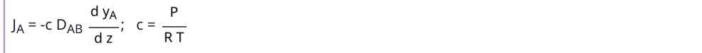
NA = JA + yA(NA + NB)
With NB = 0, the total molar flux is NA, not zero. Substitute and rearrange:
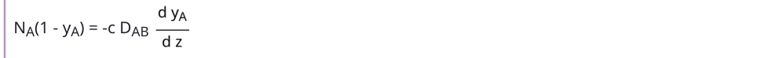
At steady state NA is constant. Integrate from plane 1 to plane 2:
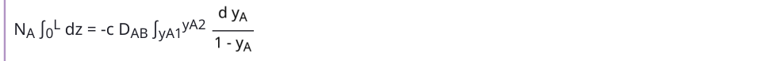
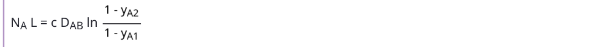
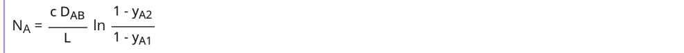
For an ideal gas, pA = P yA. With the value of c above, the partial-pressure form is:
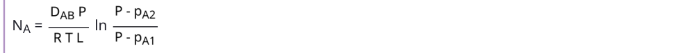
NA is positive toward plane 2 for the stated boundary concentrations.
Here ln is the natural logarithm, D is in m² s⁻¹, L in m and N in mol m⁻² s⁻¹. If the two boundary compositions are equal the flux is zero. For dilute A, the logarithm approaches yA1 − yA2. Do not drop the bulk-flow term merely because B is stagnant.
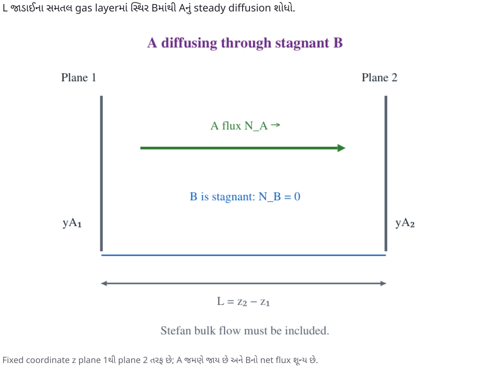
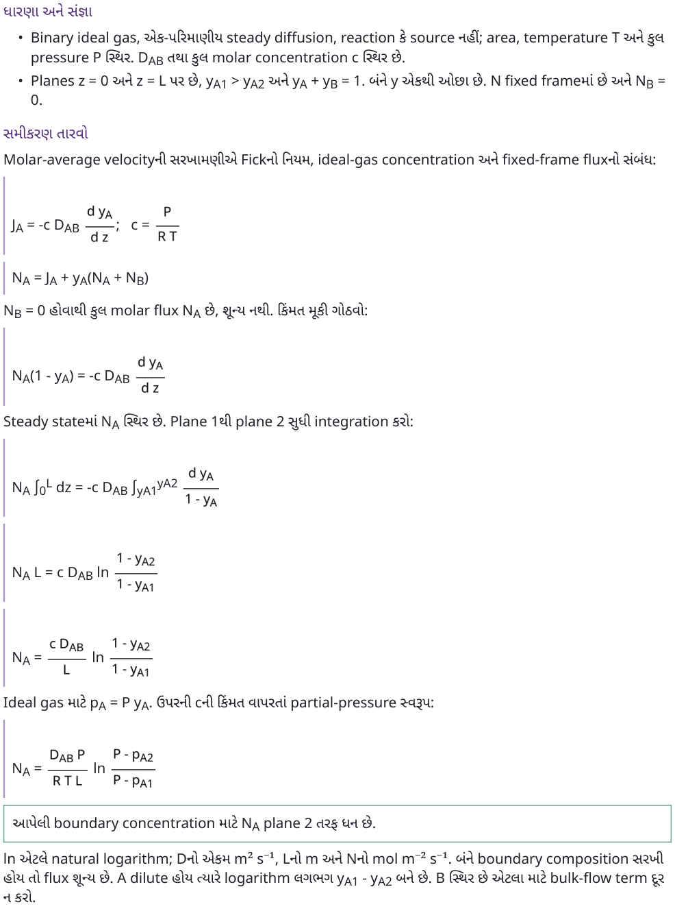
Q.2 (a) · Derive relation between diffusivity (DAB = DBA). · OR · 3 marks
For a binary mixture at the same state, use diffusive molar fluxes relative to the molar-average velocity. By definition JA + JB = 0 and yB = 1 − yA.
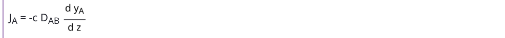
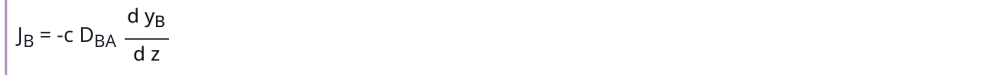
Since d yB = −d yA, add the two equations:
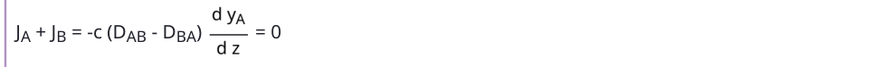
For a nonzero gradient, DAB = DBA.
This is the same binary mutual diffusivity; it does not imply that the fixed-frame total fluxes NA and NB are always equal and opposite.
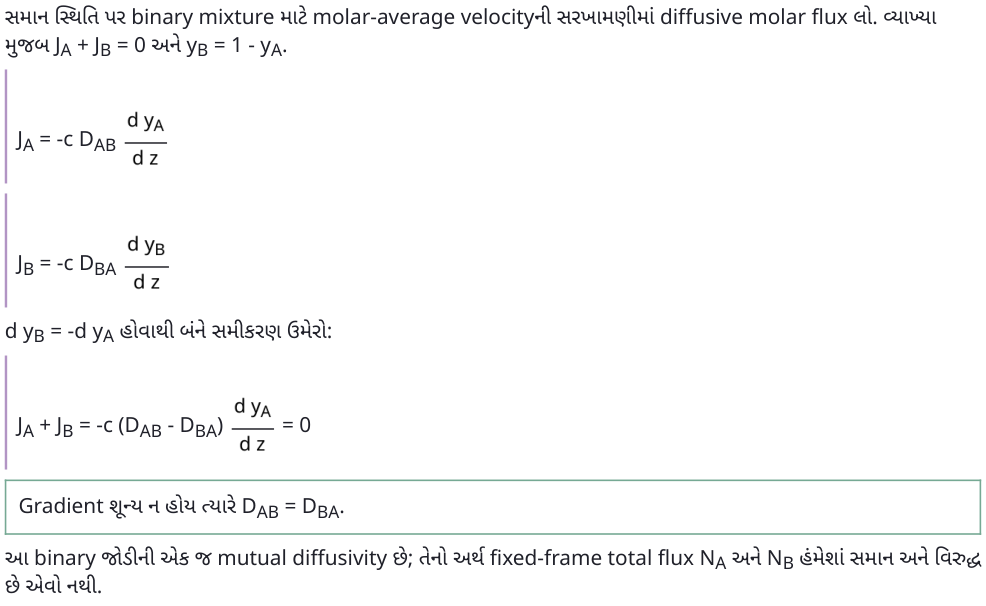
Q.2 (b) · Explain types of cascade. · OR · 4 marks
A cascade connects several contacting stages so the desired separation can develop in steps.
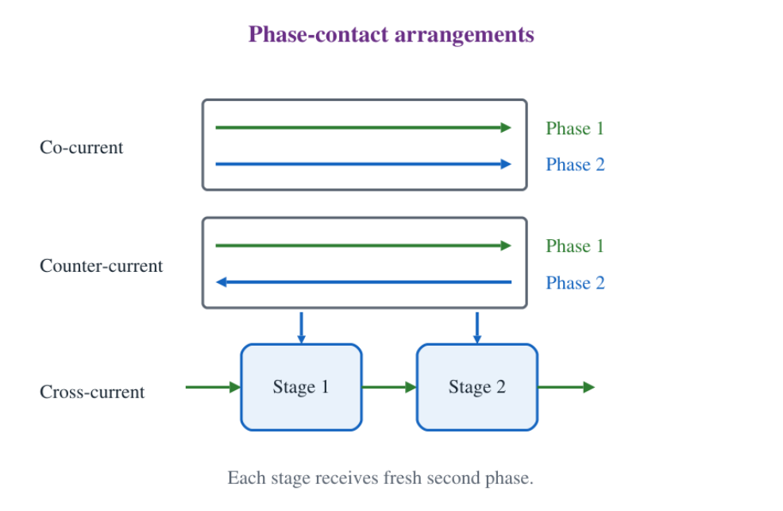
Co-current, counter-current and cross-current phase arrangements; arrows are schematic.
• Co-current: both phases proceed in the same overall direction from stage to stage; their driving force generally declines together.
• Counter-current: the phases move through the sequence in opposite directions. Fresh solvent meets the most depleted stream, often giving better solvent use.
• Cross-current: the processed stream moves through successive stages and each receives a separate fresh-solvent charge; each extract is withdrawn separately.
A stage may be ideal or actual; actual outlet phases need not reach equilibrium.
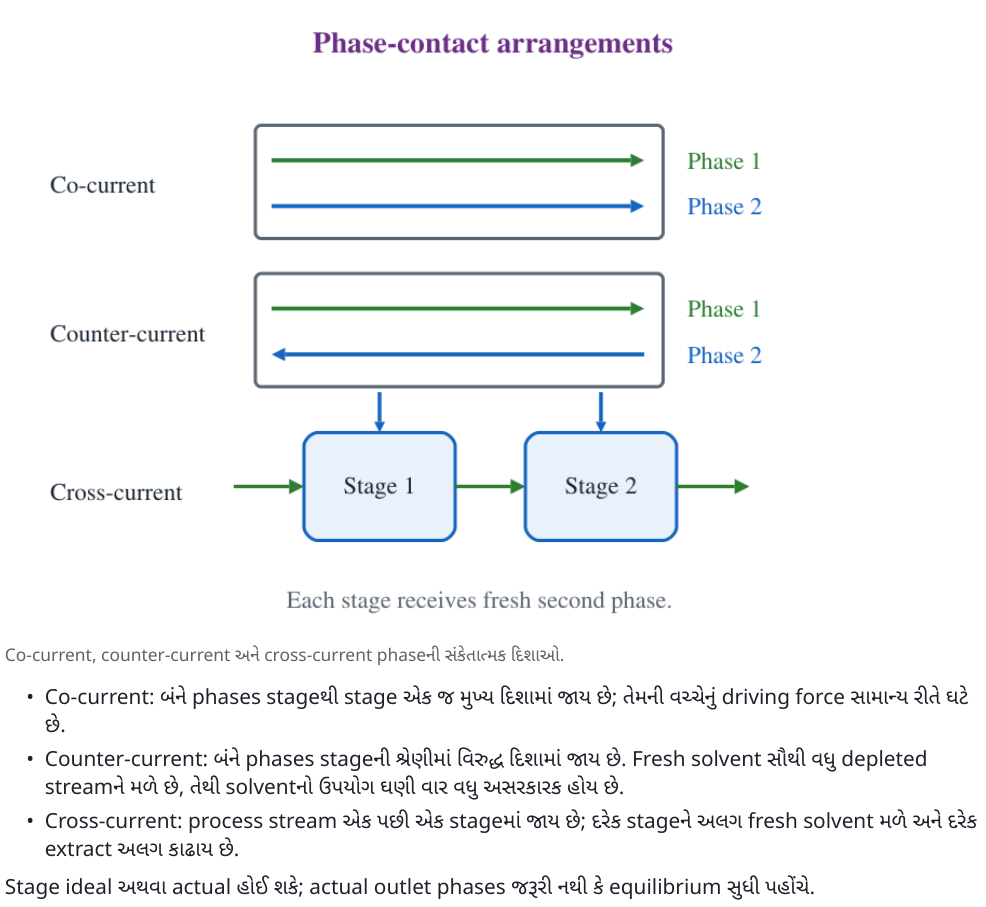
Q.2 (c) · Develop the equation for equimolal counter diffusion. · OR · 7 marks
Equimolal counterdiffusion means A and B cross a fixed plane in opposite directions at equal molar rates per unit area.
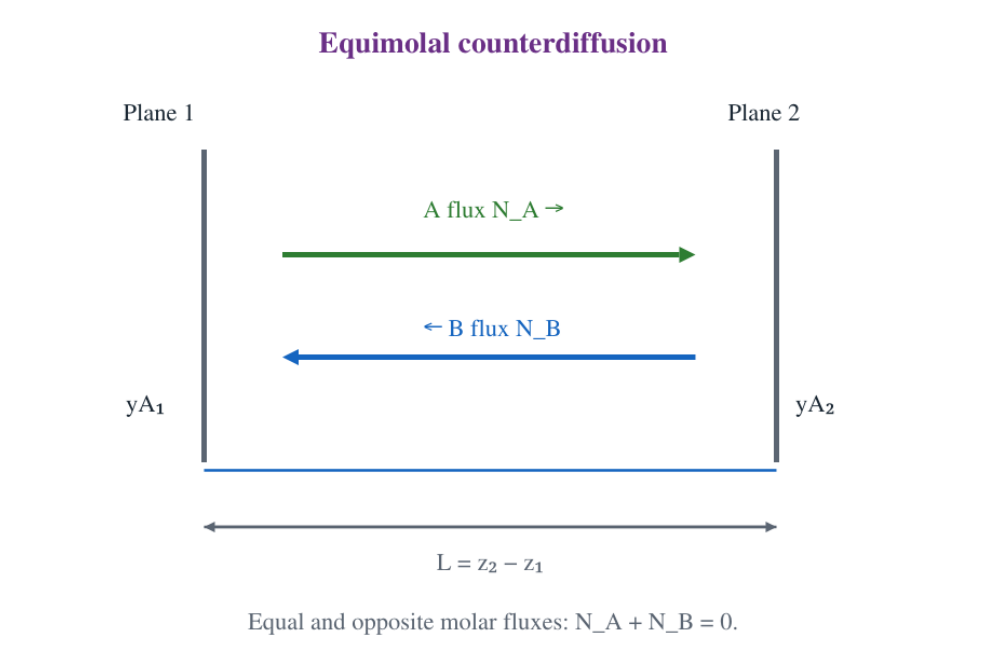
Equal and opposite fixed-frame molar fluxes give zero total molar flux.
Assumptions
• Binary ideal gas; steady one-dimensional diffusion across a plane layer of constant area and thickness L, no reaction or source.
• Constant T, total P, DAB and total molar concentration c. Take z from plane 1 to plane 2 and yA1 > yA2.
Derivation
NA + NB = 0; NB = −NA
The bulk-molar-flow term vanishes in NA = JA + yA(NA + NB). Fick’s law and the ideal-gas concentration become:
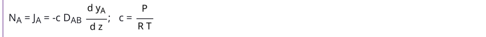
With NA constant at steady state, integrate across the layer:
NA ∫0L dz = −c DAB ∫yA1yA2 d yA
NA L = c DAB (yA1 − yA2)
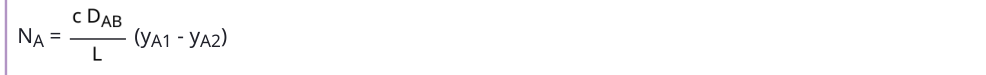
Using the ideal-gas concentration above and pA = P yA gives:
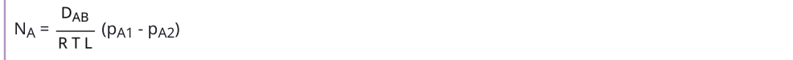
The corresponding linear mole-fraction profile is:
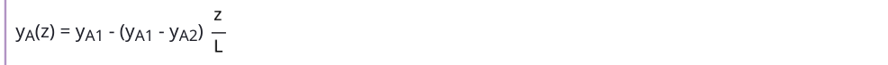
A goes toward plane 2 and B goes toward plane 1 with NB = −NA.
N is in mol m⁻² s⁻¹ and D in m² s⁻¹. Equal boundary compositions give zero flux. This is not the stagnant-B case, where the total molar flux is generally nonzero.
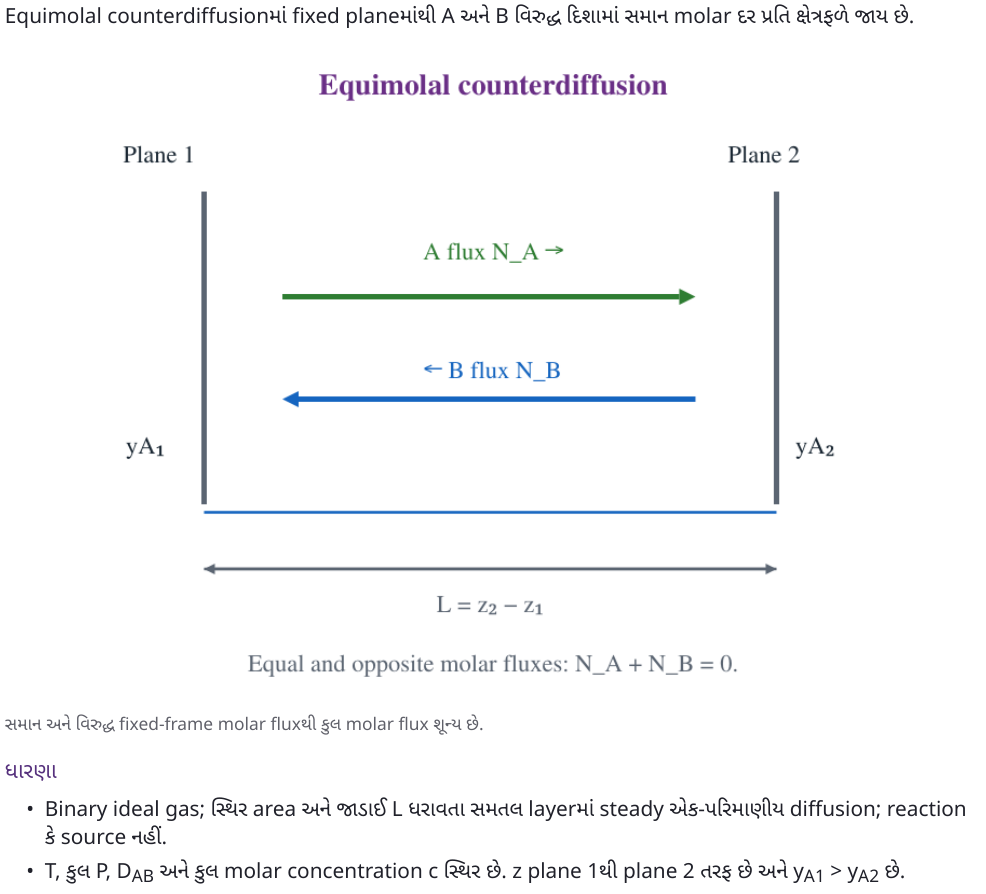
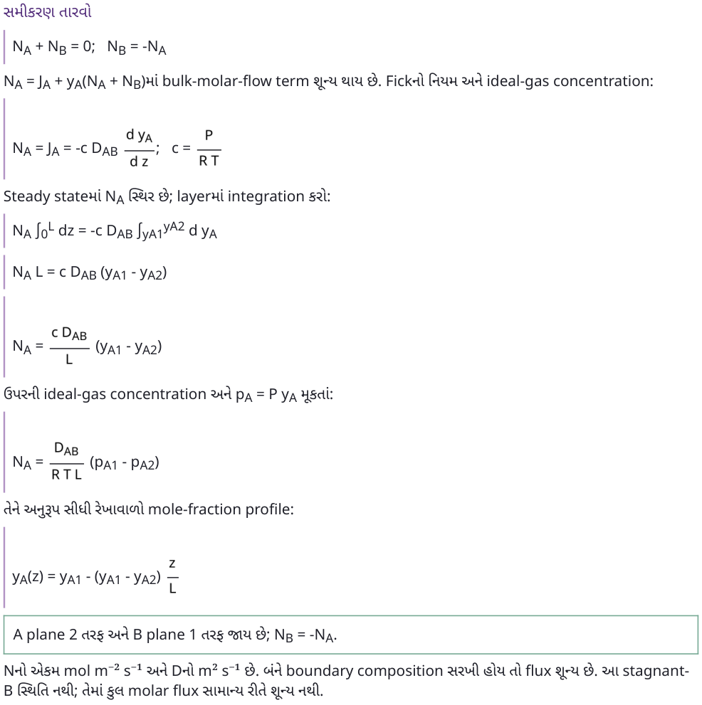
Question 3
Q3 · Gas absorption and equilibrium
Q.3 (a) · Compare local and overall mass transfer coefficients. · 3 marks
For absorption of A, individual film coefficients use the actual bulk-to-interface driving force; overall coefficients combine both films into a bulk-to-equilibrium driving force.
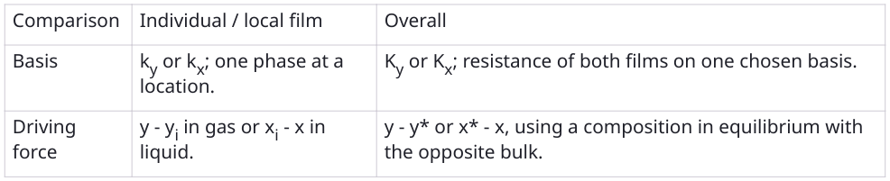
NA = ky(y − yi) = kx(xi − x)
NA = Ky(y − y*) = Kx(x* − x)
For linear equilibrium y* = m x, x* is the liquid composition in equilibrium with bulk gas y. With consistent mole-fraction, molar-flux and area bases:
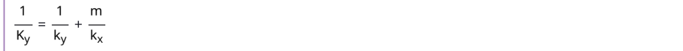
The interface compositions are generally not measured directly. “Overall” combines phases, not necessarily positions: k and K can both vary along a tower.
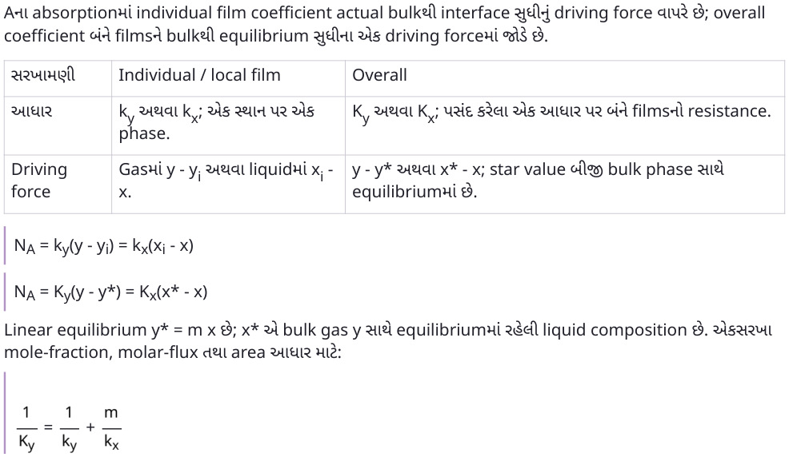
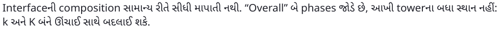
Q.3 (b) · Define gas absorption and classify its types. · 4 marks
Gas absorption transfers a soluble component of a gas mixture into a liquid absorbent by contact between the phases.
• Physical absorption: solute dissolves mainly by physical solubility, for example oxygen absorbed in water.
• Chemical absorption: the dissolved solute reacts with the solvent or a reagent, for example CO₂ absorbed in an aqueous amine solution.
• By flow arrangement: gas and liquid may contact counter-currently or co-currently; the former is common in towers.
The solvent leaving with solute is rich solution; it may be regenerated and recycled. Stripping is the reverse transfer from liquid to gas, not another direction of absorption.
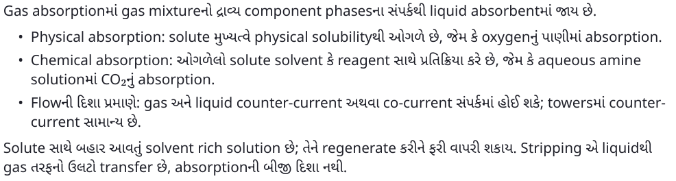
Q.3 (c) · Discuss the working of packed tower with labeled diagram for gas absorption. · 7 marks
A packed tower contacts a rising gas and descending liquid over the wetted surface of packing, so soluble gas A enters the liquid.
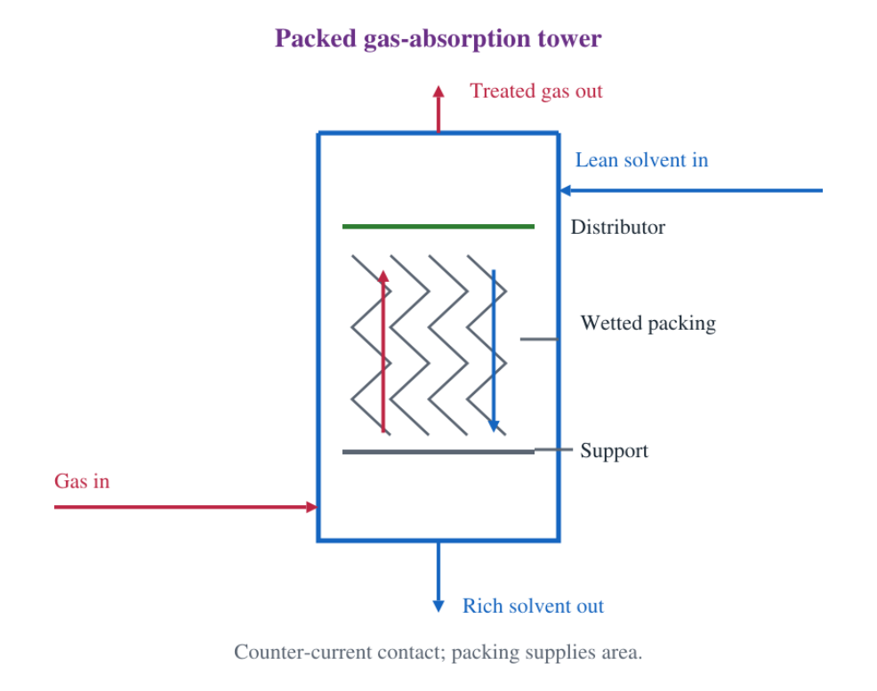
Counter-current gas absorption; schematic and not to scale.
Construction
• A vertical shell holds random packing such as rings or structured packing on a support plate; open voids allow both phases to pass.
• A top liquid distributor wets the bed; gas inlet is below the support. The top gas outlet and bottom liquid outlet remove the two products. A mist eliminator may be fitted above the bed.
Working
1. Feed the gas containing A near the bottom and fresh or lean absorbent near the top.
2. The distributor spreads liquid over packing. Gas rises through voids while liquid flows downward as films; a large interfacial area is produced.
3. A transfers from gas to liquid while the local gas composition is above that in equilibrium with the liquid. The treated gas leaves at the top and rich absorbent leaves at the bottom.
4. Choose packing, gas velocity and liquid rate to keep surfaces wet without excessive pressure drop, channeling, entrainment or flooding.
Packing supplies contact area, not necessarily discrete equilibrium stages. Solvent regeneration
may be provided separately.
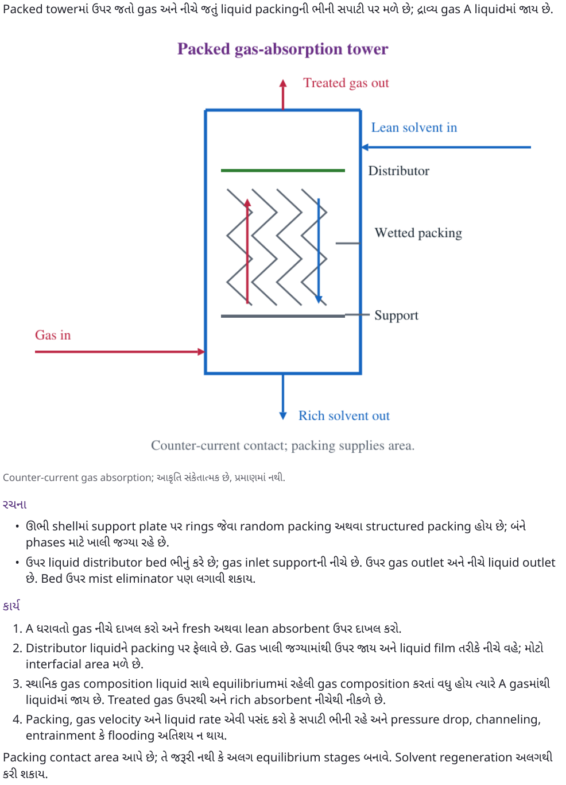
Q.3 (a) · State the concept of two-film theory. · OR · 3 marks
Two-film theory represents the resistance to interphase transfer by thin films on both sides of the interface.
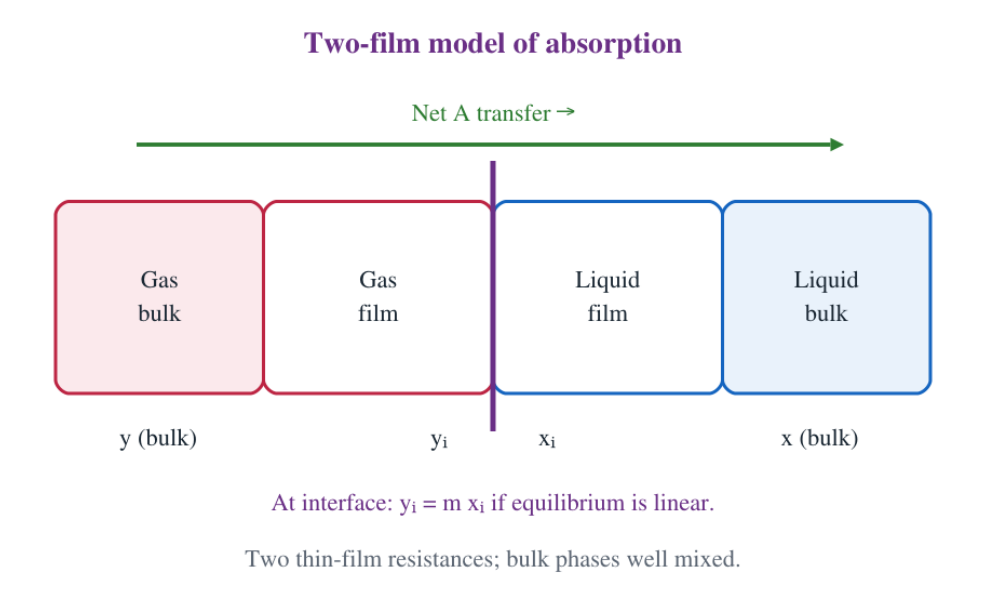
Bulk and interface compositions are indicated for gas-to-liquid transfer.
• The bulk gas and liquid are well mixed; molecular diffusion through the two films causes the main concentration drops.
• The interface itself is at local equilibrium; if the equilibrium is linear, yi = m xi. At steady state the same molar flux crosses both films.
NA = ky(y − yi) = kx(xi − x)
Here ky and kx are individual film coefficients on consistent mole-fraction and area bases.
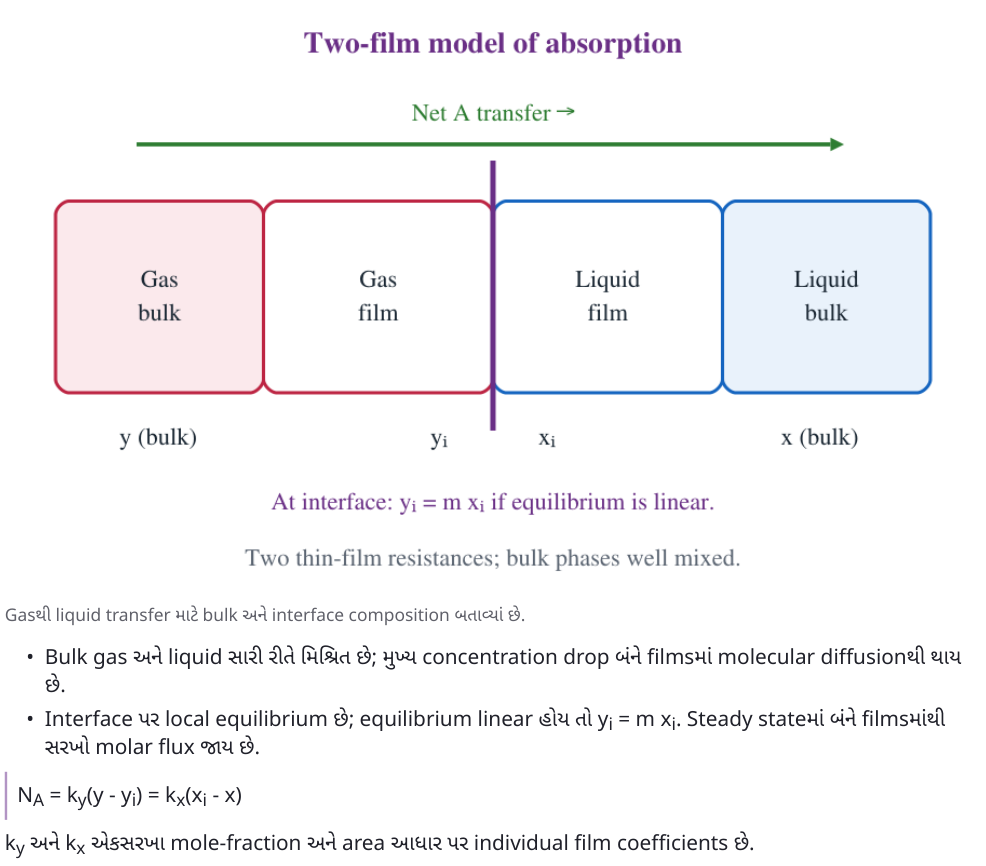
Q.3 (b) · Explain Ideal liquid solutions and Raoult’s law. · OR · 4 marks
An ideal liquid solution obeys Raoult’s law for every component over the whole composition range at a given temperature.
pi = xi pisat(T)
pi is the equilibrium partial pressure of i, xi its liquid mole fraction, and pisat the pure-component vapour pressure at that temperature. With an ideal-gas vapour, pi = yiP, so:
yi P = xi pisat(T)
• Unlike and like molecular interactions are similar; ideal mixing has zero enthalpy and volume change.
• A benzene–toluene liquid mixture is approximately ideal over suitable conditions. Real solutions can show positive or negative deviations; Raoult’s law is not universal.
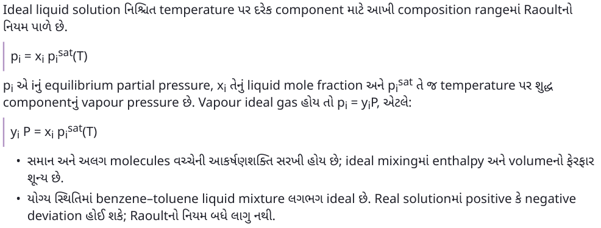
Q.3 (c) · Illustrate criteria for solvent selection for gas absorption. · OR · 7 marks
Choose an absorbent that meets the required gas cleanup, recovery and safety targets at the operating conditions; a low purchase price alone is not enough.
1. Capacity and equilibrium: high solubility or a favorable reaction gives sufficient driving force and a reasonable solvent rate. Check equilibrium at operating temperature and pressure.
2. Selectivity: absorb the desired solute preferentially and dissolve as little valuable carrier gas or competing components as practical.
3. Regeneration: the solute should be recoverable and the liquid reusable with acceptable heating, stripping or reaction-reversal cost. Chemical absorption may need additional regeneration energy.
4. Low loss: low vapour pressure and limited entrainment reduce solvent loss and gas contamination, while the chosen solvent must still be practical to regenerate.
5. Rate and hydraulics: low viscosity, good wetting and suitable density aid transfer and pumping; avoid foaming, excessive pressure drop, flooding and solids formation.
6. Stability and compatibility: resist chemical and thermal degradation; avoid damaging corrosion and incompatibility with packing, seals and product.
7. Safety, environment and economics: prefer low toxicity, flammability and environmental impact; account for make-up, energy, corrosion protection, waste treatment and solvent recovery.
Example: water can absorb ammonia because of high solubility, subject to the process and safety requirements. No single solvent maximizes every criterion.
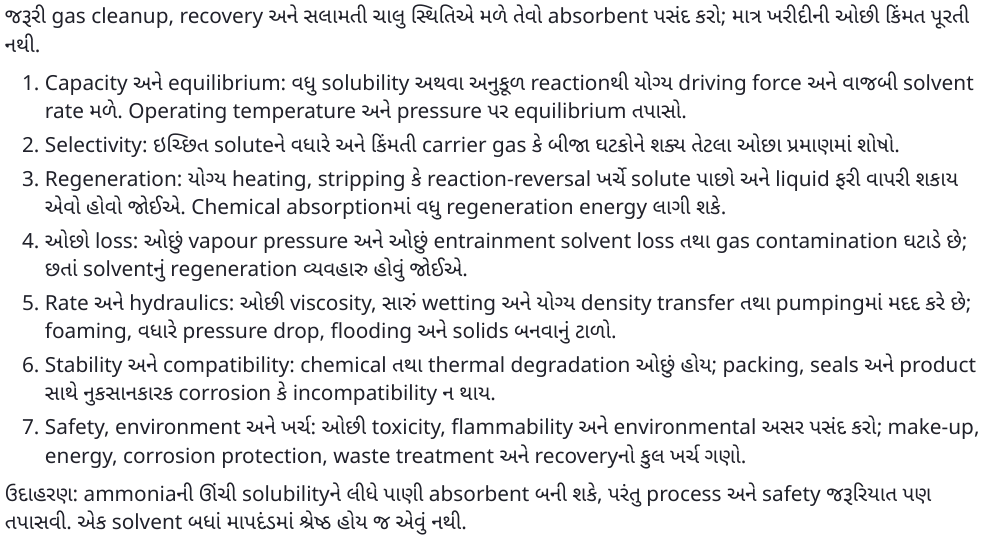
Question 4
Q4 · Liquid–liquid extraction
Q.4 (a) · Define liquid-liquid extraction with example. · 3 marks
Liquid–liquid extraction separates a dissolved solute by contacting its feed liquid with a second liquid solvent, only partly miscible with the first. The solute distributes between the two phases.
After mixing and settling, the solvent-rich phase is the extract and the original-carrier-rich phase is the raffinate.
Example: nicotine can be extracted from aqueous solution into kerosene; the attainable split depends on equilibrium and the amount of solvent.
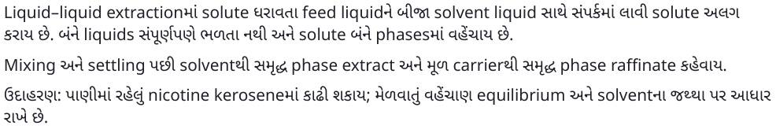
Q.4 (b) · Explain triangular coordinate system used in extraction. · 4 marks
An equilateral triangular coordinate diagram displays a mixture of solute A, feed carrier B and solvent S on one consistent mass- or mole-fraction basis.
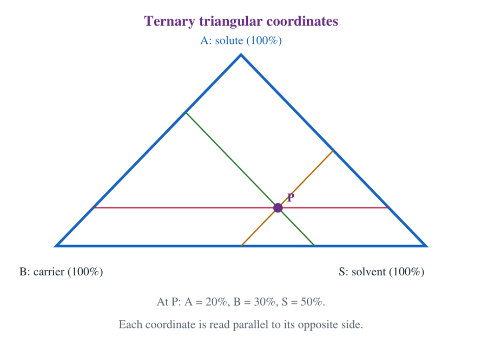
The three lines through P are parallel to the side opposite the component being read.
• Each vertex is 100% of its named component; the opposite side contains 0% of that component. Points on any side contain only the two end components.
• The three component fractions at any point add to 1, or 100%. Through a mixture point draw a line parallel to the side opposite a vertex and use the corresponding component scale.
• At illustrated P, A = 20%, B = 30% and S = 50%; the check is 20 + 30 + 50 = 100%.
• A binodal curve, when supplied for the system and conditions, separates the two-liquid region from the one-liquid region. A tie-line joins the compositions of coexisting extract and raffinate.
Do not mix mass percentages with mole percentages on the same triangle.
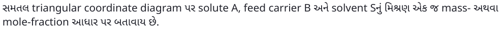
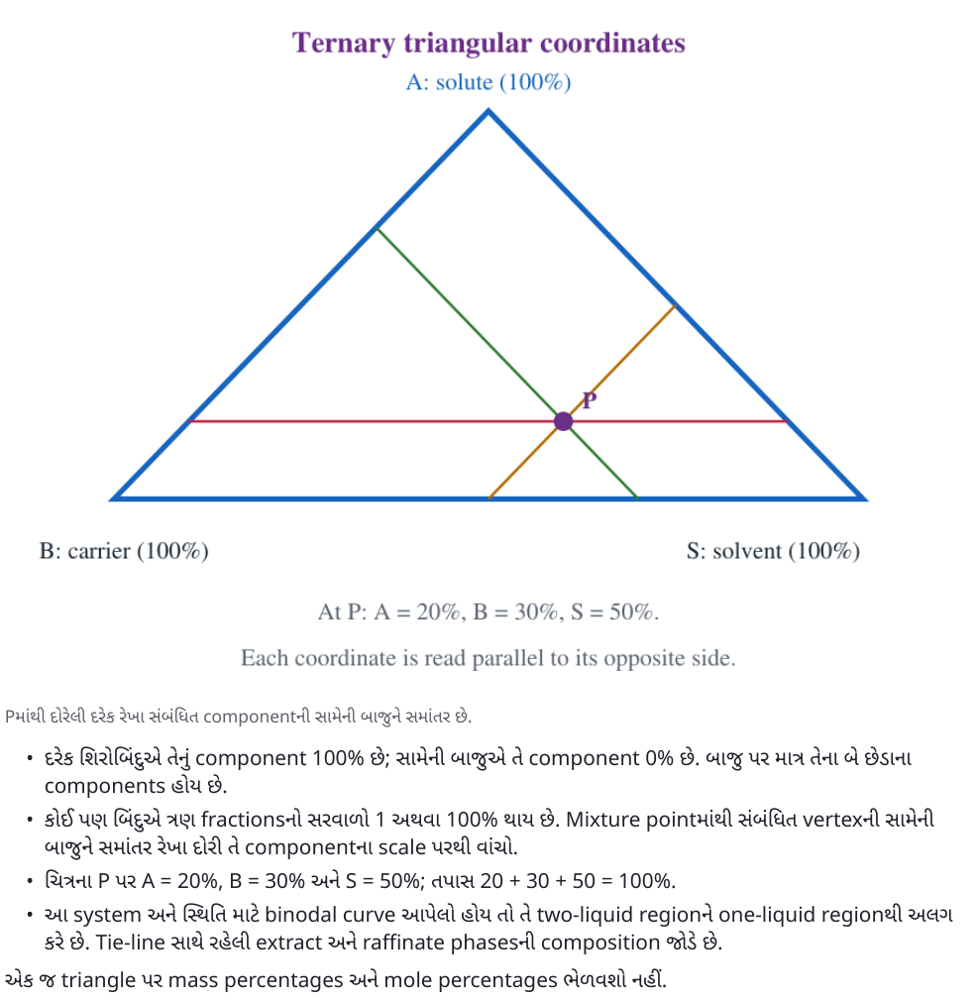
Q.4 (c) · Develop material balance for multistage cross-current extraction. · 7 marks
A cross-current cascade passes the raffinate from each stage to the next; each stage receives a separate fresh-solvent charge and its extract is removed.
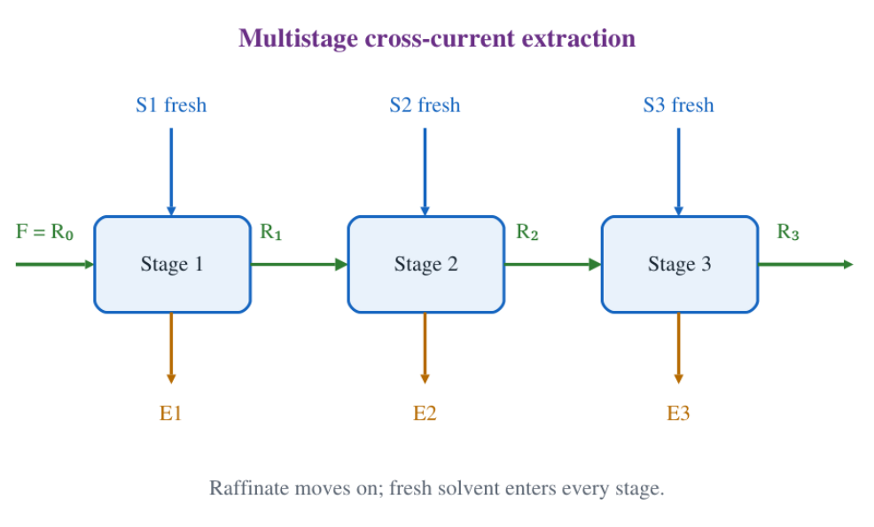
R₀ is the feed; S₁, S₂ and S₃ are separate solvent charges, not recycled extract.
Basis and assumptions
• Take L kg of solute-free feed carrier B and Si kg of solute-free solvent in stage i. Assume the carriers are mutually insoluble, no entrainment, reaction or loss, and a well-mixed equilibrium stage.
• Xi = kg A per kg B in raffinate; Yi = kg A per kg solvent in extract. YS,i is the incoming solvent’s solute ratio. Ri and Ei are total phase masses.
Ri = L(1 + Xi); Ei = Si(1 + Yi)
Stage i material balance
Ri−1 + Si(1 + YS,i) = Ri + Ei
L Xi−1 + Si YS,i = L Xi + Si Yi
For fresh solute-free solvent, YS,i = 0. If the ratio-basis equilibrium is linear, Yi = m Xi:
L Xi−1 = (L + m Si) Xi
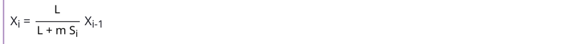
Apply the recurrence stage by stage. If the equilibrium slope m and each separate charge S are the same for n stages:
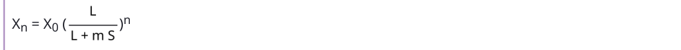
The total solvent used is nS, not S. Summing the solute balances for fresh solvent gives:
L X0 = L Xn + ∑ SiYi
Extracted solute = L(X0 − Xn) for fresh solute-free solvent.
Check: if n = 0 or solvent charge is zero, Xn = X0, so recovery is zero. If mutual solubility, entrainment or a nonlinear equilibrium is significant, use full phase balances and the actual equilibrium data instead.
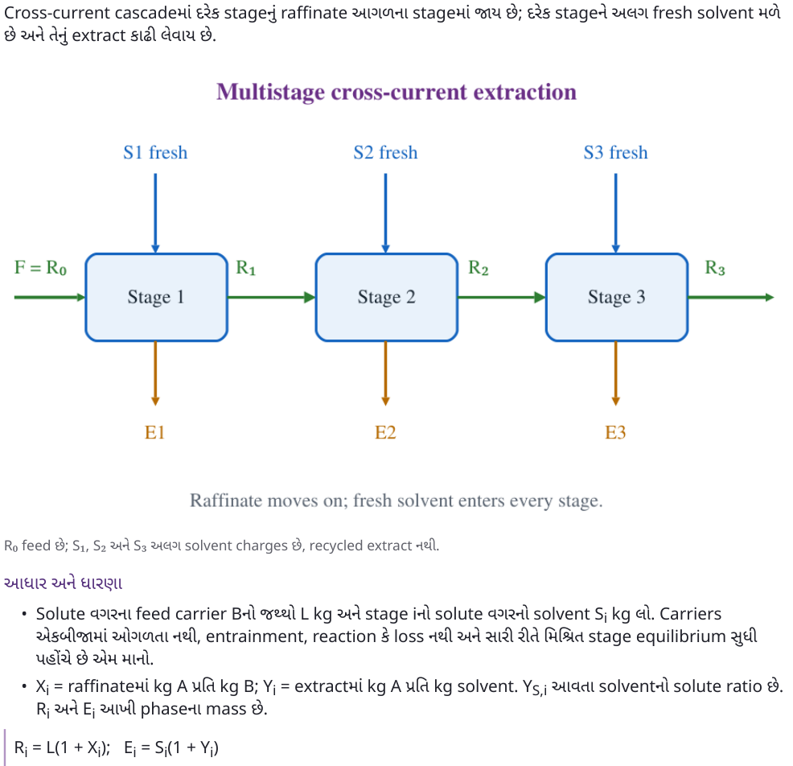
Q.4 (a) · State the meaning of tie-line and plait point. · OR · 3 marks
A tie-line on a liquid–liquid equilibrium diagram joins the compositions of two conjugate phases— extract and raffinate—that coexist at equilibrium at a specified temperature and pressure.
A two-phase mixture point lies on the tie-line between its end compositions; the lever rule gives relative phase amounts.
The plait point is where the conjugate compositions become identical and the tie-line length falls to zero. It is not normally a pure-component vertex.
Q.4 (b) · Explain tray tower for liquid liquid extraction · OR · 4 marks
A sieve-tray extraction tower gives repeated liquid–liquid contact on trays inside a vertical shell.
One possible arrangement: heavy phase continuous and light phase dispersed; the choice may be reversed in a real design.
1. Introduce heavy liquid near the top and withdraw it at the bottom; downcomers carry it from tray to tray.
2. Introduce light liquid near the bottom. It rises as droplets through tray perforations, contacts the heavy liquid and leaves at the top.
3. Solute distributes between the phases; repeated dispersion and coalescence give staged contact. Actual stages need not reach equilibrium.
4. Control the interface, flow rates and pressure drop to limit entrainment, flooding and loss of phase separation.
The feed phase carrying the solute and the solvent are assigned to heavy or light ports according to their actual densities.
Q.4 (c) · A solution of nicotine in water containing 1% nicotine is to be extracted with kerosene at 293 K . water & kerosene are essentially insoluble. Assume the equilibrium relationship to be. Y= 0.9 X ,where , Y= kg of nicotine/kg of kerosene ,X= kg of nicotine/kg of water. Determine the percentage extraction of nicotine if 100kg of a feed solution is extracted with 150 kg of solvent(kerosene). · OR · 7 marks
Take the printed 1% as 1 wt%. Since the question does not specify stage count or solvent purity, assume one equilibrium contact with fresh nicotine-free kerosene, then complete phase separation.
Basis: 100 kg feed solution and 150 kg kerosene at 293 K.
Feed nicotine = 0.01 × 100 = 1 kg; feed water = 100 − 1 = 99 kg.
Water and kerosene are essentially immiscible; no other loss or reaction. Their carrier masses remain 99 kg and 150 kg.
Step 1 — definitions and equilibrium
X = kg nicotine per kg water in the raffinate; Y = kg nicotine per kg kerosene in the extract. The printed relationship is Y = 0.9 X.
Step 2 — nicotine balance
1 = 99 X + 150 Y
1 = 99 X + 150(0.9 X) = 234 X
Step 3 — solve equilibrium compositions
Y = 0.9 X = 0.00384615 kg nicotine (kg kerosene)⁻¹
Step 4 — amount and percentage extracted
mA,E = 150 × 0.00384615 = 0.576923 kg
Nicotine extracted ≈ 0.5769 kg, or 57.69% of the feed nicotine.
Check: nicotine left in water = 99 X = 0.423077 kg; 0.423077 + 0.576923 = 1.000000 kg. Total outlet phase mass is 99.423077 + 150.576923 = 250 kg. Other stage counts, solvent purity or feed basis would change the answer.
Question 5
Q5 · Leaching and equipment
Q.5 (a) · Define leaching and state its industrial applications. · 3 marks
Leaching is the selective dissolution of a soluble constituent from a solid by contacting it with a liquid solvent; the insoluble solid is then separated from the solution.
• Vegetable oil extraction from oilseeds with a suitable solvent.
• Sugar extraction from sliced beet using hot water; metal recovery from suitable ores using leach solution.
The solute-rich liquid is extract or liquor; wet exhausted solids retain some solution.
Q.5 (b) · Explain Leaching by shanks systems. · 4 marks
The Shanks system is a battery of stationary percolation tanks operated in a changing sequence to approximate counter-current leaching.
Beds do not travel between tanks; valves advance the liquid-contact sequence.
1. Charge successive tanks with solid and allow solvent or liquor to percolate through each bed.
2. Fresh solvent enters the most exhausted bed, then liquor passes through beds containing progressively fresher solids. Rich extract leaves the freshest bed.
3. When the oldest bed is exhausted, disconnect, drain, unload and recharge it. Switch valves so that the recharged tank becomes the fresh-solids end and a new exhausted bed receives fresh solvent.
4. This cyclic arrangement uses a spare tank to avoid stopping the entire battery. The apparent counter-current movement comes from sequencing, not from solid flowing between tanks.
It is suitable for permeable beds of coarse solids; very fine solids can block percolation.
Q.5 (c) · Develop material balance equation for single-stage leaching. · 7 marks
Perform a single-stage leaching balance around mixing, dissolution and solid–liquid separation.
Overflow is clear solution; underflow contains inert solid plus retained solution.
Basis and symbols
• F is feed mass: I kg insoluble inert solid, AF kg soluble solute and BF kg solvent already in the feed. S kg incoming solvent solution contains solute mass fraction xS.
• E is clear overflow solution mass; U is wet underflow mass; MU is solution retained by the solids. xE and xU are solute mass fractions in those solutions.
• Assume no evaporation, reaction or loss, no inert solids in overflow, and complete dissolution of A into the available solvent; there is no undissolved solute in the solid.
F = I + AF + BF
U = I + MU
Material balances
The inert-solid balance gives I in the underflow. Total, solute and solvent balances respectively are:
F + S = E + U
AF + S xS = E xE + MU xU
BF + S(1 − xS) = E(1 − xE) + MU(1 − xU)
Well-mixed equilibrium case
If the liquid retained by the underflow has the same composition as overflow, xE = xU = x. Combine the solute balance and total liquid mass:
AF + S xS = x(E + MU)
E + MU = AF + BF + S
For fresh pure solvent xS = 0. If measured liquid retention is r kg solution per kg inert solid:
MU = r I; U = I + r I
E = AF + BF + S − r I
Use a physical retention value with 0 ≤ rI ≤ total solution. If solute remains undissolved, an additional solid-solute term and solubility relation are needed; the simplified equations do not apply unchanged.
Illustrative check — not printed data
I = 40 kg, AF = 10 kg, BF = 0, S = 90 kg fresh solvent; r = 0.5 kg solution per kg inert.
MU = 20 kg; U = 60 kg; E = 80 kg. Total check: 50 + 90 = 60 + 80 = 140 kg. Solute check: 10 = 20(0.10) + 80(0.10) = 10 kg. Overflow contains 8 kg solute; wet solids contain 2 kg.
Q.5 (a) · Draw a flow sheet for continuous counter current decantation. · OR · 3 marks
Continuous counter-current decantation (CCD) washes leached solids through a cascade of mixing and settling stages.
Solids underflow moves toward fresh wash; clear overflow travels toward the feed end.
Feed slurry enters stage 1 and fresh wash enters the last stage. Each stage mixes and settles; solids- rich underflow moves to the next stage, while solution overflow moves in the opposite direction. Rich liquor leaves stage 1 and washed solids leave the final stage.
Q.5 (b) · Explain working of Bollman extractor With neat sketch. · OR · 4 marks
The Bollman extractor is a continuous bucket percolation extractor, often used for oil-bearing flakes.
Half miscella collected from the ascending side is pumped to the descending-side spray.
1. A chain carries perforated buckets inside a casing. Fresh flakes enter the descending side; spent wet solids are discharged near the top of the ascending side.
2. Fresh solvent is sprayed onto the upper ascending buckets. It percolates down while solids travel up, giving counter-current contact; the collected dilute oil solution is half miscella.
3. Pump half miscella to the top of the descending side. It percolates downward through fresh solids travelling down, so this side is co-current. Collect the concentrated full miscella from the bottom.
4. Send full miscella for solvent recovery and wet solids for desolventizing. The whole unit is therefore not purely counter-current.
The sketch is schematic; solvent handling and vapour containment must suit the actual solvent.
Q.5 (c) · Explain Construction ,working & applications of Rotocell With neat sketch. · OR · 7 marks
The Rotocel (Rotocell) extractor is a continuous, staged percolation extractor with rotating cells and approximately counter-current liquid contact.
Top view of the rotating cells; stationary sprays and collection pans are represented schematically.
Construction
• A slowly rotating circular rotor is divided into sector-shaped cells with perforated or screened bottoms holding the solids.
• A fixed casing surrounds the rotor. Stationary spray headers, separate collecting pans and pumps recirculate the liquid from one sector to another.
• A feed inlet loads fresh flakes; a discharge opening removes extracted wet solids. A rich- miscella outlet and solvent-recovery equipment are provided.
Working
1. Feed enters a cell and rotates with it. Liquid sprayed onto the bed percolates through the solids and its screened bottom into a collection pan.
2. Fresh solvent is supplied near the solids-discharge end, where it contacts the most exhausted solids. Liquid from successive pans is pumped toward cells holding fresher solids, giving an overall counter-current sequence.
3. Near the fresh-feed end, concentrated miscella is withdrawn for oil and solvent recovery. After a revolution the leached, solvent-wet solids are discharged and desolventized.
Applications and note
Used for extraction of vegetable oil from soybean, groundnut and other suitably prepared oilseed
flakes. A permeable bed and safe solvent containment are important; the solvent is normally recovered and reused.